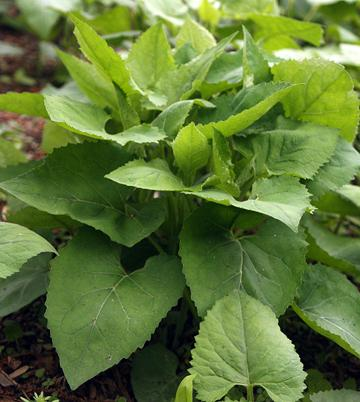

Aster Scaber

[Chwinamul, Chamchwi (Korea); Shirayamagiku (Japan); Aster Scaber]
This perennial herb is common in mountain regions of China, Japan. the
Russian east, and particularly Korea. It is in cultivation in Korea,
where the young, tender stems are considered a welcome harbinger of
Spring. The rest of the year, dried shoots are used. It has a unique
herbal aroma and a pleasant bitterness.
As the plant gets older, it sends up a hard stalk about 4 feet high,
with widely spaced leaves, and a profusion of thin branches at the top
with small white aster-like flowers on the tips.
Photo by Dalgial distributed under license Creative Commons
Attribution-ShareAlike v3.0 Unported.
In Korea this herb is very commonly used in banchan (small side
dishes), but also in soups and stews, particularly Bibimbap, one
of Korea's signature dishes.
More on Daisy Herbs & Flowers
 This is one of the few kinds of Korean dried stems where leaves are
also included. It has a very nice herbal aroma.
This is one of the few kinds of Korean dried stems where leaves are
also included. It has a very nice herbal aroma.
Buying & Storing:
In North America, this plant
is not much available except dried. Find it in Korean markets. Packages
of Korean origin are considered superior. Sealed packages, kept
away from heat and sunlight, should last over a year.
Yield
: After the boil and cool cycle, and wringing out
excess water, 1 ounce makes 3-1/2 ounces. After an overnight soak and
wringing out excess water, 1 ounce makes 3-3/4 ounces. That may not
seem like much improvement, but texture and color are noticeably
improved.
Cooking:
The dried shoots must be rehydrated, and that
doesn't happen real fast. Korean cooking maven Maangchi recommends this
procedure:
- Take dried Aster Scaber out of the package and rinse it.
- Put the Dried Shoots in a pot with cold water to cover it
by 4 inches. Cover the pot and bring to a boil for 30 minutes.
- Set the pot aside, covered, and let cool for 2 or 3 hours.
- Drain Shoots and rinse several times to remove dirt and grit.
- Return to the pot. Cover with cold water by 4 or 5 inches. Let soak
overnight or at least 10 hours.
- Rinse and drain. It is now ready for use in recipes.
dy_ascabz 150925 - www.clovegarden.com
©Andrew Grygus - agryg@clovegarden.com - Photos
on this page not otherwise credited © cg1
- Linking to and non-commercial use of this page permitted